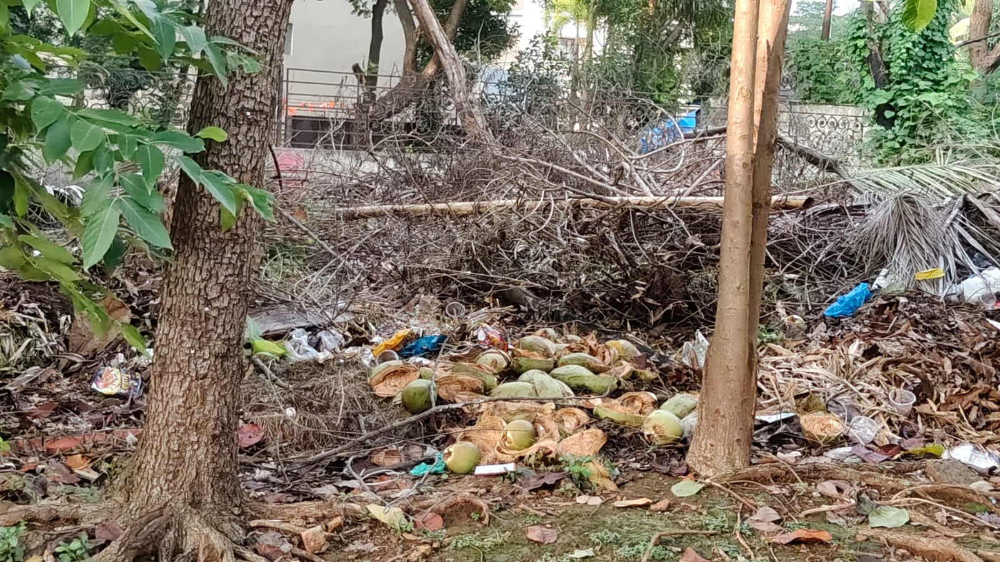
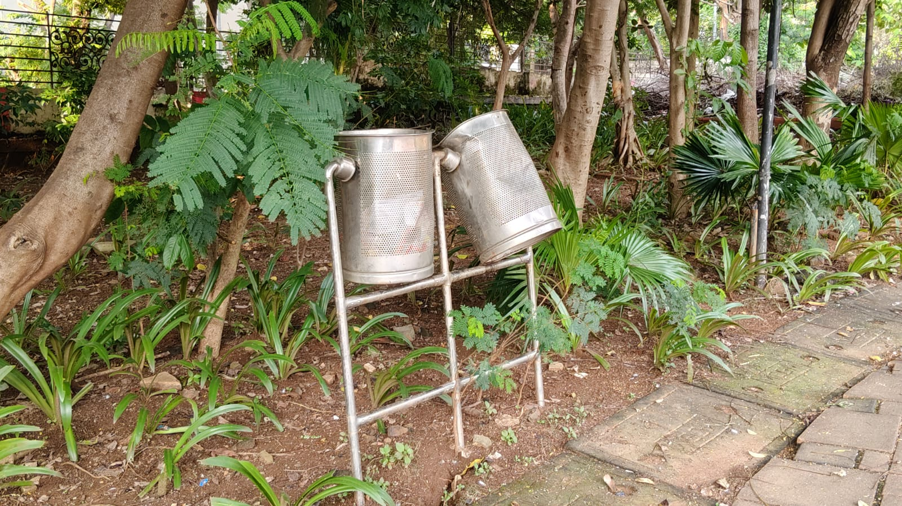
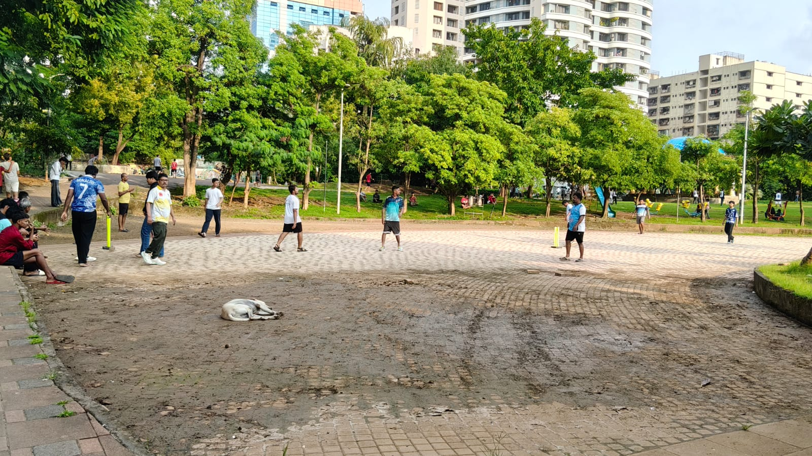

PARK 02 • FIELD ASSESSMENT
Problems & Improvements
Issues identified from the supplied photographs and visitor survey, followed by practical improvement suggestions.
FINDINGS
Areas That Need Attention
The findings below distinguish visible field evidence from survey-reported concerns.

Waste & Cleanliness
A field photograph shows discarded waste in a planted area. Lack of dustbins is the most selected main problem (35%).
Practical Action
Increase dustbin coverage and strengthen routine cleanliness and waste collection.

Waste Management & Cleanliness
The image shows dustbins that appear worn and poorly maintained, with surrounding vegetation and litter affecting the cleanliness of the area.
Practical Action
Replace or repair damaged dustbins and ensure regular waste collection and cleaning around the park.

Open Ground & Recreational Area
The open recreational area has an uneven and worn surface, with visible dirt and debris. This can make the space less comfortable and suitable for recreational activities.
Practical Action
Improve the ground surface through regular maintenance, cleaning, and leveling, and keep the recreational area clear of debris.
SURVEY HIGHLIGHTS
What Visitors Asked to Improve
Better cleanliness
40% selected better cleanliness as an important improvement.
More facilities
40% selected more facilities as the future improvement.
Toilets
30% selected toilets as the facility improvement.
CONCLUSION
Connecting Evidence to Improvement
The field photographs show the physical character and visible issues of the space, while the 20-response survey identifies what visitors most frequently selected as concerns and improvement needs. Together, these findings provide a basis for practical park improvements.